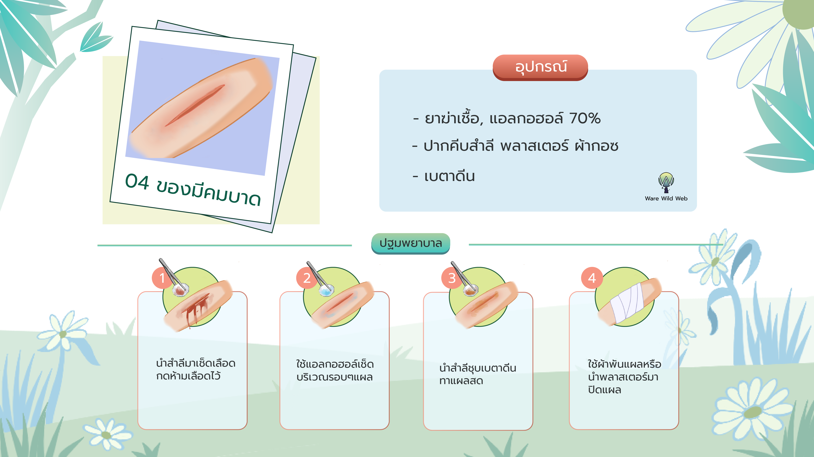

อุปกรณ์ปฐมพยาบาลที่ควรเตรียมไปมีดังนี้
01. ผ้ากอซ
02. ผ้าพันแผลแบบม้วนเพิ่มเติม
(แบบยืดหรือแบบค็อตตอนน้ำหนักน้อย)
03. พลาสเตอร์ปิดแผล
หรือพลาสเตอร์แบบปีกผีเสื้อ
04. ปากคีบ

05. ถุงมือยาง
06. แผ่นเช็ดฆ่าเชื้อ
อุปกรณ์ปฐมพยาบาลที่ควรเตรียมไปมีดังนี้

13. สำลี ไม้พันสำลี
14. วัสดุแข็งทำเฝือก
(สามารถใช้กิ่งไม้แข็งๆได้)
15. ยากันยุง ยาไล่แมลง เช่น ยาที่มีส่วนประกอบของ DEET เก็บไว้ในขวดมิดชิด
16. แอลกอฮอล์ ยาฆ่าเชื้อแบบต่างๆ
17. กรรไกร
18. น้ำยาล้างมือฆ่าเชื้อ
การแพ็คอุปกรณ์ปฐมพยาบาลมีสิ่งที่ต้องคำนึงดังนี้
ถุงที่ใส่ควรเป็นสีสดและเห็นได้ง่าย เช่น ใช้เป็นสีแดงและมีกากบาทสีขาวติดไว้
หยิบจับค้นหาได้ง่าย เก็บอุปกรณ์ในถุงแห้ง มีช่องใสด้านข้างกระเป๋าให้มองเห็นจากภายนอก
ทนทานและกันน้ำ ถุงที่ใส่ต้องหนาเพื่อรักษาความปลอดภัยของอุปกรณ์ และต้องกันน้ำ100%
มีอาการบาดเจ็บหรืออุบัติเหตุอะไรบ้าง?
ที่พบได้บ่อยระหว่างการเดินทาง
01 แผลถลอก
บาดแผลจากการถูกครูด ขีดข่วนผิวหนัง แผลจะตื้นแค่ผิวหนังชั้นนอกและอาจมีเลือดออกเล็กน้อย สิ่งสำคัญคือต้องระวังไม่ให้แผลติดเชื้อ
02 กระดูกหัก
เมื่อกระดูกหักจะทำให้เกิดอาการบวม เจ็บปวด การหักของกระดูกแบ่งเป็นลักษณะ ดังนี้
1. กระดูกหักแบบปิด ไม่มีบาดแผลภายนอก กระดูกที่แตกจะอยู่แค่ภายใน ไม่โผล่ออกมาข้างนอกเหนือผิวหนัง
2. กระดูกหักแบบเปิด มีบาดแผลบริเวณตำแหน่งที่กระดูกหัก เห็นปลายกระดูกโผล่พ้นมาทางบาดแผล เสี่ยงติดเชื้อง่าย
03 ข้อเท้าแพลง
สาเหตุจากการเดินบนพื้นไม่เรียบ ซึ่งเป็นลักษณะของเส้นทางเดินป่าส่วนใหญ่ หรือจากการตกจากที่สูง ทำให้เกิดการบิด หมุนพลิกของข้อเท้า เอ็นและเนื้อเยื่ออาจฉีกขาด มีอาการ ปวด บวม กดเจ็บบริเวณเท้า
04 แผลถูกของมีคมบาด
ลักษณะเป็นบาดแผลเปิด ฉีกขาดของผิวหนัง จากการโดนของมีคมหรือถูกวัตถุกระแทกอย่างแรงจนเกิดบาดแผลมีเลือดไหลออกมา
05 เท้าพองและเล็บม่วง
การเดินป่าใช้เวลาส่วนมากไปกับการเดิน ทำให้เท้าเสียดสีกับรองเท้าร่วมกับการระบายอากาศไม่ดีพอ ทำให้เกิดความร้อนชื้น หลอดเลือดขยายตัวทำให้เกิดการบวมเป็นตุ่มพอง มีลักษณะพองจากการอักเสบ มีน้ำข้างใน และการกดทับจากรองเท้าที่แน่นเกินไปอาจทำให้เกิดอาการเล็บม่วงขึ้นมาได้